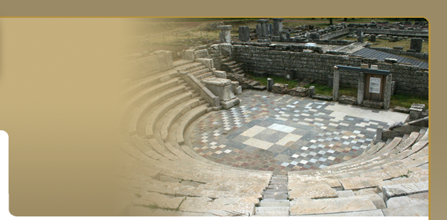
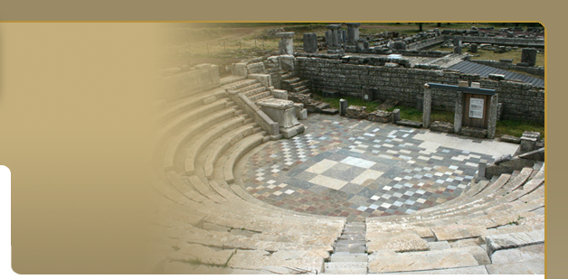

• Auberger J., Pausanias et les Messéniens: une histoire d’amour, REA 94 (1992), 187 – 19.
• Baldassarra D., Famiglie aristocratiche di Messene in epoca imperiale (Tesi di Laurea, Universita di Venezia), 1999.
• Barr-Sharrar B., A Plakettenvase from Ancient Messene, in Κερμάτια Φιλίας, Τιμητικός τόμος για τον Ιω. Τουράτσογλου, Αθήνα 2009, τομ. Β., 441-449.
• Bauslaugh R.A., Messenian Dialect and Dedications of the Methanioi, Hesperia 59 (1990), 661-668.
• Biagetti Cl., La Messenia e gli Eraclidi, La Parola del Passato CCCLXIX (2009), 411-451.
• Böhringer D., Heroenkulte in Griechenland von der geometrischen bis zur klassischen Zeit. Attika, Argolis, Messenien, Freiburg 1998 (Dissertation).
• Bourbou Chr., The People of Early Byzantine Eleutherna and Messene (6th-7th c.) A bioarchaeological approach, Athens 2004.
• Broucke P.B.F.J., The Heroon at Messene: New Observations on Order, Style, and Date, Paper Delivered at the Annual Meeting of the Archaeological Institute of America, Montréal.(6-8/01).
• Cooper F. A. & Fortenberry D., The Heroon at Messene, AJA 97 (1993), 337.
• Cooper F., Scamilli Impares and the Heroon at Messene, στο Haselberger L. (ed.), Appearance and Essence Refinements of Classical Architecture-Curvature, Philadelphia 1997, 97-112.
• Cooper Fr., Reconstruction and Design of the Heroon at Messene, στο Ito J. (ed.), Symposium for International Collaborative Studies on Ancient Messene, Kumamoto 2002, 40-43.
• Deligiannakis G., Two Late-Antique statues from ancient Messene, BSA 100 (2005), 387-406.
• Deshours N., Cultes de Déméter, d’ Artémis Ortheia et culte impérial à Messène (Ier s. av. notre ére-Ier s. de notre ére), ZPE 146 (2004), 115-127.
• Deshours N., La légende et le culte de Messène ou comment forger l’identité d’ une cité, REG 106(1993), 39 – 60.
• Deshours N., Les institutions civiques de Messène à l’époque hellénistique tardive, ZPE 150, 134–146.
• Deshours N., Les Messéniens, le règlement des Mystères et la consultation de l’ oracle d’ Apollon Pythéen à Argos, REG 112 (1999), 463-484.
• Deshours N., Les Mystères d’ Andania. Ėtude d’épigraphieet d’histoire religieuse (Ausonius Scripta Antiqua 16), Bordeaux 2006.
• Felten Fl. και Reinholdt Cl., Das Brunnenhaus der Arsinoe in Messene, στο Mitsopoulos-Leon V. (ed.), Forschungen in der Peloponnes. Akten des Symposions anläßlich der Feier “100 Jahre Österreichisches Istitut Athen”, Athen 2001, 307–323.
• Figueira T., The Evolution of the Messenian Identity, in Hodkinson S. and Powell A. (eds.), Sparta: New Pespectives, London 1999, 227 κ.ε.
• Fröhlich P., Les institutions des cités de Messénie à la basse époque hellénistique, in Renard J. (ed.), Le Péloponnèse. Archéologie et histoire, Rennes 1999, 229 -242.
• Grandjean C., Contremarques et monnaies messèniennes et spartiates des débutes du principat, BSFN 47 (1992), 298-301.
• Grandjean C., La question de l’Ėtat messénien, REG 115 (2002), 538–560.
• Grandjean C., Les Messéniens de 370/369 au Ier siècle de notre ère. Monnayages et histoire (BCH Suppl. 44), Athènes–Paris 2003.
• Grandjean C., Monnaies et circulation monétaire à Messène du second siècle av. J.C. au premier siècle ap. J.C., Topoi 7/1 1997, 115-122.
• Habicht Chr., Neues aus Messene, ZPE 130 (2000) 121–126.
• Habicht Chr., Zwei Familien aus Messene, ZPE 115 (1997), 125-127.
• Hayashida Y., Survey and Reconstruction of the Asklepieion at Messene, στο Ito J. (ed.), Symposium for International Collaborative Studies on Ancient Messene, Kumamoto 2002, 31-40.
• Hoepfner W., Der Stadtplan von Messene, AAA 35-38 (2002-2005), 223-228.
• Ito J., Architectural Studies of the three Grave Monuments in the Gymnasium Complex at Ancient Messene, Kumamoto 2002.
• Ito J., Survey and Reconstruction of the Grave Monuments at Messene, στο Ito J. (ed.), Symposium for International Collaborative Studies on Ancient Messene, Kumamoto 2002, 1-10.
• Katsumata T., Sculptures from the Grave Monument K1, στο: Ito J. (ed.), Symposium for International Collaborative Studies on Ancient Messene, Kumamoto 2002, 10-15.
• Luraghi N., Becoming Messenian, JHS 122 (2002), 45-69.
• Luraghi N., Messenian Kulte und messenische Identität im hellenistischer Zeit, in Funke P. & Haake M. (eds.), Kult Politik–Ethnos: Überregionale Heiligtümer im Spannungsfeld von Kult und Politik, Historia Eizalschriften 189, 2006, 169-196.
• Luraghi N., Pausania e I Messenii: interpretazioni minime, RFIC (2005) 133, 177-201.
• Luraghi N., Pausania e la fondatione di Messene sullo Stretto, note di lettura, RFIC 122 (1994), 140-151.
• Luraghi, N., Messenian Ethnicity and the Free Messenians, in Funke P., and Luraghi N. (eds.), The Politics of Ethnicity and the Crisis of the Peloponnesian League, Cambridge 2009, 110-134.
• Maggi S., Sul tempio di Messene a Messene, Athenaeum 84 (1996), 260-265.
• Migeotte L., La date de l’oktôbolos eisphora de Messène, Topoi 7/1 (1997), 51-61.
• Morizot Y., Artémis Limnatis, sanctuaires et functions, στο Docter R.F. & Moormann E.M. (εκδ.), Classical Archaeology towards the Third Millenium: Reflections and Perspectives, Proceedings of the XV the International Congress of Classisal Archaeology, Amsterdam, July 12-17 1998, Amsterdam 1999 (Allard Pierson Series 12 ), 270 – 272.
• Morizot Y., Le hiéron de Messènè, BCH 118 (1994), 399-405.
• Müth S., Eigene Wege. Topographie und Stadtplan von Messene in spätklassisch-hellenistischer Zeit, Rahden 2007.
• Müth-Herda S., Street Network and Town Planning of Ancient Messene, in Ito J. (ed.), Symposium for International Collaborative Studies on Ancient Messene, Kumamoto 2002, 16-30.
• Müth-Herda S., Messene: Topographie und Stadtplan in spätklassischer und hellenistischer Zeit (Dissertation), Berlin 2005.
• Nobis G., Archäozoologische Studien an Tierresten aus Alt-Messene/Ithome (SW-Peloponnes, Griechenland), Grabungen 1992 bis 1996, in Buitenhuis H., Prummel W., Animals and Man in the Past: Essays in honour of Dr. A. T. Clason emeritus professor of archaeozoology Rijksuniversiteit Groningen, the Netherlands, Groningen 2001, 95-121.
• Nobis G., Tieropfer aus einem Heroen-und Demeterheiligtum des antiken Messene (SW-Peloponnes, Griechenland), Grabungen 1992 bis 1996, Tier und Museum 5.4 (1997), 97-111.
• Nobis, G., Die Tierreste aus dem antiken Messene: Grabung 1990/91, στο Kokabi M., Wahl J. (εκδ.), Beiträge zur Archäozoologie und Prähistorischen Anthropologie, Forschungen und Berichte zur Vor- und Frügeschichte in Baden-Württemberg 53, Stuttgart 1994, 297-313.
• Reinholdt Cl., Das Brunnenhaus der Arsinoë in Messene, Wien 2009.
• Sève M., Le dossier épigraphique du sculpteur Damophon de Messène, Ktema 33 (2008), 117-128. 
• Sineux P., Á propos de l’ Asclépieion de Messène: Asclépios poliade et guérisseur, REG 110 (1997), 1-24.
• Sioumpara Ε., Der Asklepiostempel von Messene auf der Peloponnes. Untersuchungen zur hellenistischen Tempelarchitektur (Dissertation), 2011.
• Themelis P., Architectural Terracottas from Messene, in Winters N.A (ed.), Proceedings of the International Conferrence on Greek Architectural Terracottas of the Classical and Hellenistic Periods, Athens, December 12-15, 1991, Hesperia Supplement 27 (1994), 141-169, pl. 48-56.
• Themelis P., Artemis Ortheia at Messene, the Epigraphical and the Archaeological Evidence, in Hägg R. (ed.), Ancient Greek Cult Practice from the Epigraphical Evidence, International Seminar at the Swedish Institute at Athens 22-24 November 1991, Stockholm 1994, 101-122.
• Themelis P., Bourbou Chr., Child Burials from Messene, in Morizot Y. (ed.), L'enfant et le mort dans l'antiquité, Paris 2011.
• Themelis P., Cults on Mount Ithome, Kernos 17 (2004), 143-154.
• Themelis P., Damophon of Messene. New Evidence, in Sheedy K. (ed.), Archaeology in the Peloponnese. New Excavations and Research, Oxford 1994, 1-37.
• Themelis P., Damophon von Messene: Sein Werk im Lichte der neuen Ausgrabungen, AntK 36 (1993) 24-40.
• Themelis P., Damophon, in Palagia O. and Pollitt J.J. (eds.), Personal Styles in Greek Sculpture (YCS 30), Cambridge 1996, 154-187.
• Themelis P., Das Gymnasion von Messene in der römischen Zeit, in Reusser Chr. (ed.), Griechenland in der Kaiserzeit, Neue Funde und Forschungen zu Skulptur, Architektur und Topographie, Bern 2001, 9-20.
• Themelis P., Das Stadion und das Gymnasion von Messene, Nikephoros 22 (2010).
• Themelis P., Die Statuenfunde aus dem Gymnasion von Messene, NüBlA 15(1998/99, 2000), 59-84.
• Themelis P., Messene, Recent Discoveries (Sculpture), in Stamatopoulou M. – Yeroulanou M. (eds.), Excavating Classical Culture: Recent Archaeological Discoveries in Greece, Oxford 2002, 229-243.
• Themelis P., Monuments guerriers de Messéne, in Frei-Stolba R. and Gex K. (eds.), Recherches récents sur le monde hellénistique, Actes du colloque en l’honneur de Pièrre Ducrey, Lausanne 20-21 Nov. 1998, Bern 2001, 199-216.
• Themelis P., The cult of Isis in Ancient Messene, in Veymiers R. (ed.), IVe Colloque International sur les Études Isiaques, Liège 2011.
• Themelis P., The Economy and Society of Messenia under Roman Rule, in A.D. Rizakis (ed.), Roman Peloponnese III. Society, Economy and Cultutre in the Imperial Roman Order: Continuity and Innovation, Meletemata XX, Athens 2010.
• Themelis P., The Messene Theseus and the Ephebes, in Buzzi S. et alii (eds.), Zona Archaeologica, Festschrift für Hans Peter Isler zum 60. Geburstag, Bonn 2001, 407-419.
• Themelis P., The Sanctuary of Demeter and the Dioscouroi at Messene, in Hägg R. (ed.), Ancient Greek Cult Practice from the Archaeological Evidence, International Seminar held at the Swedish Institute at Athens 22-24 October 1993, Stockholm 1998, 157-186.
• Toma N.-M., Die Bauornamentik der Stoen des Asklepieions von Messene. Zur Typologie, chronologischen Einordnung unf Funktion der Figuralkapitelle, Berlin 2006 (Magisterarbeit).
• Torelli M., L’Asklepieion di Messene , lo scultore Damofonte e Pausania, in Capecchi G. (eds.), In Μemoria di Enrico Pariboni vol. ΙΙ, Archaelogica 125, Roma 1998, 465–483.
• Tsivikis N., Considerations on some Bronze Buckles from Byzantine Messene, in B. Böhlendorf-Arslan (ed.), Byzantinische Kleinfunde im Archäologischen Kontext, DAII, Constantinople 2011.
• Zunino M.L., Hiera Messeniaka, Udine 1997.
• Αναγνωστάκης Η. και Πούλου Ν., Η πρωτοβυζαντινή Μεσσήνη (5ος-7ος αιώνας) και προβλήματα της Χειροποίητης Κεραμικής στη Πελοπόννησο, Σύμμεικτα 11 (1997) 229-319.
• Γαλανού Αμ. και Δογάνη Ι., Ο Ερμής της Αρχαίας Μεσσήνης: Εφαρμογή τεχνολογίας Laser για απομάκρυνση ιζηματογενών αποθέσεων, Αρχαιολογία 85 (2002) 87-94.
• Γιαγκάκη Α., Γραπτή εφυαλωμένη κεραμική από την ανασκαφή της αρχαίας Μεσσήνης, ΔΧΑΕ περ. Δ, ΚΖ΄ (2006), 435-444.
• Γιαγκάκη, Α., Υστερορωμαϊκά πήλινα ενσφράγιστα "ιγδία" από την αρχαία Μεσσήνη, Βυζαντινός Δόμος 16 (2007-8), 35-67.
• Θέμελης Π., Yστερορωμαϊκή και Πρωτοβυζαντινή Mεσσήνη, στo Θέμελης Π. - Kόντη B. (εκδ.), Πρωτοβυζαντινή Mεσσήνη και Oλυμπία: Aστικός και αγροτικός χώρος στη Δυτική Πελοπόννησο, Πρακτικά του Διεθνούς Συμποσίου, Aθήνα 29-30 Mαΐου 1998, Aθήνα 2002, 20-58.
• Θέμελης Π., Πρώιμη ελληνιστική κεραμική από τη Μεσσήνη, στο ΣΤ’ Επιστημονικό Συνέδριο Ελληνικής Κεραμεικής, Βόλος 2004, 409-438, πίν. 183-194.
• Θέμελης Π., O Δαμοφών και η δραστηριότητά του στην Aρκαδία, στο Coulson W.D. and Palagia O. (εκδ.), Sculpture from Arcadia and Laconia, Proceedings of an International Conference, American School of Classical Studies at Athens 10-14 Αpril 1992, Oxford 1993, 99-109.
• Θέμελης Π., O Δαμοφών στην Kύθνο, στο Mενδώνη Λ. και Mαζαράκης A. (εκδ.), Κέα- Kύθνος: Ιστορία και Αρχαιολογία, Aθήνα 1998. 437–448.
• Θέμελης Π., Tο Στάδιο της Mεσσήνης, στο Coulson W. and Kyrieleis H. (εκδ.), Πρακτικά Συμποσίου Oλυμπιακών Aγώνων 5-9 Σεπτεμβρίου 1988, Aθήνα 1992, 87-91, πίν. 38-55.
• Θέμελης Π., Αρχαία Μεσσήνη - Αρχαία Κορώνη (Βίοι Παράλληλοι), στο Ομηρική Αιπεία - Αρχαία Κορώνη - Πεταλίδι: Παρελθόν, Παρόν και Μέλλον. Πρακτικά Επιστημονικού Συνεδρίου, Αύγουστος 2005, Πεταλίδι 2009, 35-44.
• Θέμελης Π., Αρχαία Μεσσήνη, ο χώρος και τα μνημεία (Ειδική Έκδοση Περιφέρειας Πελοποννήσου), Αθήνα 1998.
• Θέμελης Π., Ήρωες και ηρώα στη Μεσσήνη, Αθήνα 2000.
• Θέμελης Π., Αρχαία Μεσσήνη: Μνημεία, χώρος, άνθρωποι (εκδόσεις ΜΙΛΗΤΟΣ), Αθήνα 2010.
• Θέμελης Π., Η Ανδανία και οι κώμες της Μεσσήνης, Μεσσηνιακά Χρονικά 4 (2008-2009), 1-8.
• Θέμελης Π., Η Αρχαία Μεσσήνη. Οδηγός του χώρου και του Μουσείου (έκδοση ΤΑΠΑ), Αθήνα 2003.
• Θέμελης Π., Η ελληνιστική κεραμική της Μεσσήνης, στο Ελληνιστική Κεραμική από την Πελοπόννησο, Αθήνα 2005, 95-106.
• Θέμελης Π., Το Θέατρο της Μεσσήνης (εκδ. ΔΙΑΖΩΜΑ) Αθήνα 2010.
• Θέμελης Π., Το Πρόγραμμα της Ανασκαφής στην Αρχαία Μεσσήνη και η Δημοσίευση της, Ο Μέντωρ 60 (2001), 198-219.
• Θέμελης Π., Κόντη Β. (επιμ.), Πρωτοβυζαντινή Μεσσήνη και Ολυμπία: Αστικός και αγροτικός χώρος στη Δυτική Πελοπόννησο, Αθήνα 2002, 99-124.
• Ματθαίου Α., Δύο ιστορικές επιγραφές της Μεσσήνης, στο Mitsopoulos-Leon V. (εκδ.), Forschungen in der Peloponnes, Akten des Symposions anläßlich der Feier “100 Jahre Österreichisches Istitut Athen”, Athen 2001, 221-231.
• Μπαρδάνη Βούλα, Παλαιοχριστιανικές επιγραφές Μεσσήνης, στο Θέμελης Π., Κόντη Β.(επιμ.), Πρωτοβυζαντινή Μεσσήνη και Ολυμπία: Αστικός και αγροτικός χώρος στη Δυτική Πελοπόννησο, Αθήνα 2002, 82-98.
• Μπίρταχας Π., Μεσσήνη, το Ωδείο και το Ανατολικό Πρόπυλο, Αθήνα 2008.
• Μπίρταχας Π., Στερέωση-Αναστήλωση Ωδείου και Ανατολικού Προπύλου στο Ασκληπιείο της Αρχαίας Μεσσήνης, στο Χαρκιολάκης Ν. (επιμ.), Αποκατάσταση Μνημείων, Αναβίωση Ιστορικών Κτηρίων στην Πελοπόννησο, τομ. Α΄, Αθήνα 2008, 58-95.
• Πέννα B., Nομισματικές μαρτυρίες για τη βυζαντινή Mεσσηνία, Παμμεσσηνιακή-Aφιέρωμα, Aπρίλιος 1996, 7-13.
• Πέννα Β., Λαμπροπούλου Ά., Αναγνωστάκης Η., Γλυπτά μεταβατικών χρόνων από τη Βασιλική του Θεάτρου της αρχαίας Μεσσήνης, Πρακτικά Α΄Διεθνούς Συνεδρίου Βυζαντινής Γλυπτικής, Σεπτέμβριος 2000, Αθήνα 2008.
• Πούλου-Παπαδημητρίου Ν., Βυζαντινές πόρπες. Η περίπτωση της Μεσσήνης και της Ελεύθερνας, στο Θέμελης Π., Κόντη Β. (επιμ.), Πρωτοβυζαντινή Μεσσήνη και Ολυμπία: Αστικός και Αγροτικός χώρος στη Δυτική Πελοπόννησο, Αθήνα 2002, 125-136.
• Σιδηρόπουλος Kλ., Tα νομίσματα ως μάρτυρες της Mεσηνιακής ιστορίας, Παμμεσσηνιακή-Aφιέρωμα, Aπρίλιος 1996, 1-7.
• Χλέπα Ε.-Α., Η Αρκαδική Πύλη του τείχους της Αρχαίας Μεσσήνης: Εργασίες Αποκατάστασης-Αναστήλωσης, στο Χαρκιολάκης Ν. (επιμ.), Αποκατάσταση Μνημείων, Αναβίωση Ιστορικών Κτηρίων στην Πελοπόννησο, τομ. Α΄, Αθήνα 2008, 30-57.
• Χλέπα Ε.-Α., Μεσσήνη, το Αρτεμίσιο και οι Οίκοι της Δυτικής Πτέρυγας του Ασκληπιείου, Αθήνα 2001.
|


 
